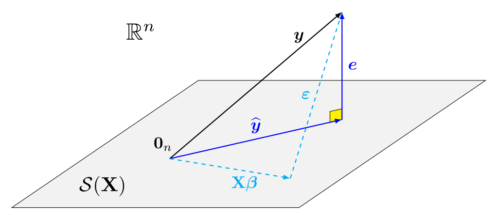
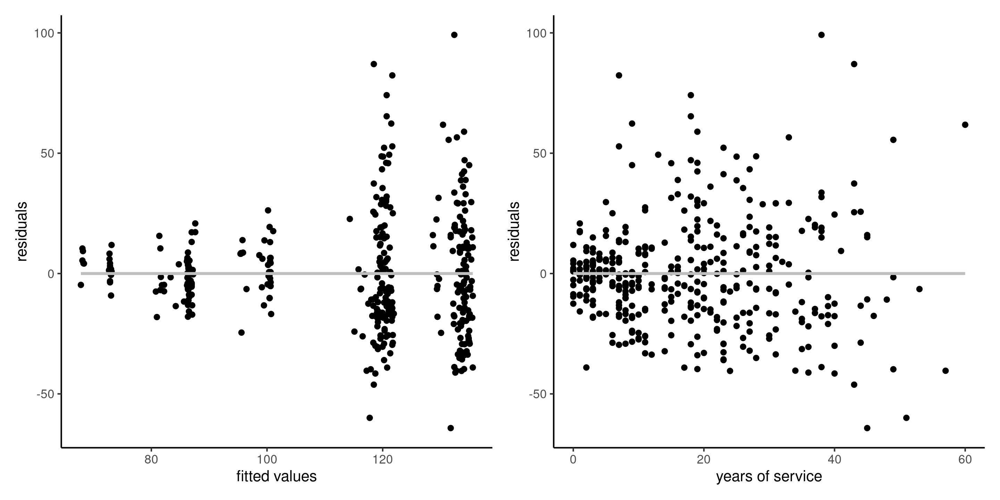
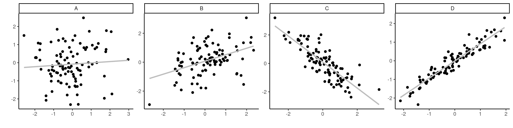
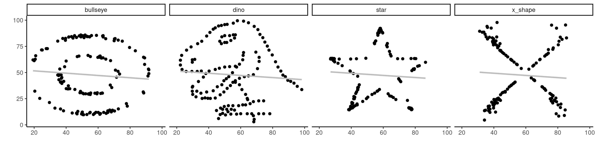
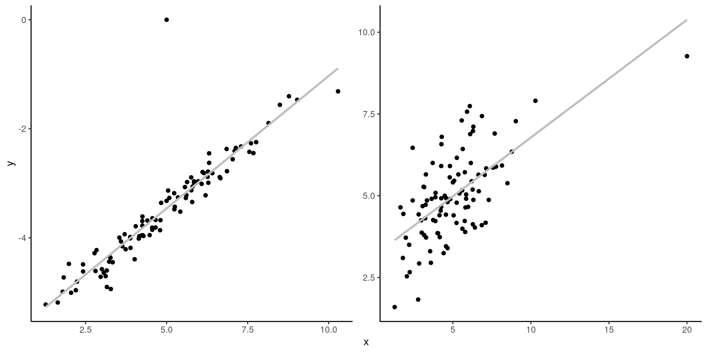

The linear model equation is \[\boldsymbol{Y} = \underset{\text{mean } \boldsymbol{\mu}}{\mathbf{X}\boldsymbol{\beta}} + \underset{\text{errors}}{\boldsymbol{\varepsilon}}\] and the fitted model gives the decomposition \[\begin{align*}
\underset{\text{observations}}{\boldsymbol{y}} = \underset{\text{fitted values}}{\widehat{\boldsymbol{y}}} + \underset{\text{residuals}}{\boldsymbol{e}}
\end{align*}\]
Projection matrices
For an \(n\times p\) matrix, the column space of \(\mathbf{X}\) is \[\begin{align*}
\mathcal{S}(\mathbf{X}) =\{\mathbf{X}\boldsymbol{a}, \boldsymbol{a} \in \mathbb{R}^p\}
\end{align*}\]
We can write the fitted values as the projection the observed response vector \(\boldsymbol{y}\) onto the linear span of the model matrix \(\mathbf{X}\), \[\begin{align*}
\underset{\text{fitted values}}{\widehat{\boldsymbol{y}}} = \underset{\substack{\text{model matrix $\times$}\\\text{OLS estimator}}}{\mathbf{X} \widehat{\boldsymbol{\beta}}} = \underset{\text{projection matrix}}{\mathbf{X}^\top(\mathbf{X}^\top\mathbf{X})^{-1}\mathbf{X}}\boldsymbol{y} = \mathbf{H}_{\mathbf{X}}\boldsymbol{y}
\end{align*}\] where \(\mathbf{H}_{\mathbf{X}} = \mathbf{X}^\top(\mathbf{X}^\top\mathbf{X})^{-1}\mathbf{X}\) is an \(n \times n\) orthogonal projection matrix.
\(\mathbf{H}_{\mathbf{X}}\) is a symmetric \(n \times n\) square matrix of rank \(n-p\).
An orthogonal projection matrix satisfies \(\mathbf{H}_{\mathbf{X}}\mathbf{H}_{\mathbf{X}} = \mathbf{H}_{\mathbf{X}}\) and \(\mathbf{H}_{\mathbf{X}} = \mathbf{H}_{\mathbf{X}}^\top\).
Visual depiction of the geometry

Consequences of orthogonality
The geometric representation has deep implications for inference that are useful for model diagnostics.
Assuming \(\mathbf{1}_n \in \mathcal{S}(\mathbf{X})\) (e.g., the intercept is included in \(\mathbf{X}\)), the sample mean of \(\boldsymbol{e}\) is zero.
The fitted values \(\widehat{\boldsymbol{y}}\) and \(\boldsymbol{e}\) are uncorrelated
Idem for any column of \(\mathbf{X}\), since \(\mathbf{X}^\top\boldsymbol{e}=\boldsymbol{0}_{p+1}\).
data(college, package ="hecstatmod")mod <-lm(salary ~ sex + field + rank + service, data = college)# Zero correlationscor(resid(mod), model.matrix(mod))[-1]## [1] -4.9e-17 -1.6e-17 3.7e-18 2.9e-18 1.3e-17cor(resid(mod), fitted(mod))## [1] -2.7e-17# Mean zero errorsmean(resid(mod))## [1] 1.5e-16
Graphical diagnostics
A linear regression of \(\widehat{\boldsymbol{y}}\) (or any column of \(\mathbf{X}\)) onto \(\boldsymbol{e}\) has zero intercept and slope.

Figure 1: Plot of residuals against fitted values (left), and against the explanatory variable service (right) for the linear regression of the college data. The intercept and the slope of the simple linear regressions are zero.
Residual patterns due to forgotten interactions, nonlinear terms, etc. could be picked up from pair plots of ordinary residuals against the explanatories.
Invariance
The fitted values \(\widehat{y}_i\) for two model matrices \(\mathbf{X}_a\) and \(\mathbf{X}_b\), are the same if they generate the same linear span, i.e., \(\mathcal{S}(\mathbf{X}_a) = \mathcal{S}(\mathbf{X}_b)\).
The Pearson correlation coefficient quantifies the strength of the linear relationship between two random variables \(X\) and \(Y\). \[\begin{align*}
\rho= \mathsf{cor}(X, Y) = \frac{{\mathsf{Co}}(X,Y)}{\sqrt{{\mathsf{Va}}(X){\mathsf{Va}}(Y)}}.
\end{align*}\]
The sample correlation \(\rho \in [-1, 1]\).
\(|\rho|=1\) if and only if the \(n\) observations fall exactly on a line.
The larger \(|\rho|\), the less scattered the points are.
Properties of Pearson’s linear correlation coefficient
The sign determines the orientation of the slope (downward for negative, upward for positive).
If \(\rho>0\) (or \(\rho<0\)), the two variables are positively (negatively) associated, meaning that \(Y\) increases (decreases) on average with \(X\).

Figure 2: Scatterplots of observations with correlations of \(0.1\), \(0.5\), \(-0.75\) and \(0.95\) from \(A\) to \(D\).
Correlation and independence
Independent variables are uncorrelated (not the other way around).
A correlation of zero only implies that there is no linear dependence between two variables.

Figure 3: Four datasets with dependent data having identical summary statistics and a linear correlation of -0.06.
Sum of squares decomposition
Suppose that we do not use any explanatory variable (i.e., the intercept-only model). In this case, the fitted value for \(Y\) is the overall mean and the sum of squared centered observations \[\begin{align*}
\mathsf{SS}_c=\sum_{i=1}^n (Y_i-\overline{Y})^2
\end{align*}\] where \(\overline{Y}\) represents the intercept-only fitted value.
When we include the \(p\) regressors, we get rather \[\begin{align*}
\mathsf{SS}_e=\sum_{i=1}^n (Y_i-\hat{Y}_i)^2
\end{align*}\] The \(\mathsf{SS}_e\) is non-increasing when we include more variables.
Percentage of variance
Consider the sum of squared residuals for two models:
\(\mathsf{SS}_c\) is for the intercept-only model
\(\mathsf{SS}_e\) for the linear regression with model matrix \(\mathbf{X}\).
Consequently, \(\mathsf{SS}_c-\mathsf{SS}_e\) is the reduction of the error associated with including \(\mathbf{X}\) in the model \[\begin{align*}
R^2=\frac{\mathsf{SS}_c-\mathsf{SS}_e}{\mathsf{SS}_c}
\end{align*}\] This gives the proportion of the variability in \(Y\) explained by \(\mathbf{X}\).
Coefficient of determination
We can show that the coefficient of determination is the square of Pearson’s linear correlation between the response \(\boldsymbol{y}\) and the fitted values \(\widehat{\boldsymbol{y}}\), \[R^2 = \mathsf{cor}^2(\boldsymbol{y}, \widehat{\boldsymbol{y}}).\]
\(R^2\) always takes a value between \(0\) and \(1\).
\(R^2\) is not a goodness-of-fit criterion: the coefficient is non-decreasing in the dimension of \(\mathbf{X}\), the more columns are added, the higher \(R^2\).
Distribution of errors
Since we define residuals as \((\mathbf{I}-\mathbf{H}_{\mathbf{X}})\mathbf{Y}\), it follows that \(E_i \sim \mathsf{normal}\{0, \sigma^2(1-h_{ii})\}\). Since \((\mathbf{I}-\mathbf{H}_{\mathbf{X}})\) has rank \(p\)
The residuals are linearly related (there are \(n-p\) free components).
The residuals are heteroscedastic, and their variance depends on the diagonal elements of the “hat matrix” \(\mathbf{H}_{\mathbf{X}}\), the collection \(\{h_{ii}\}\) for \((i=1, \ldots, n)\).
If we further estimate \(\sigma^2\) by \(S^2\), we introduce additional independence since \(S^2 = \sum_{i=1}^n e_i^2/(n-p-1)\), so \(e_i\) appears in the formula of the sample variance…
Externally studentized residuals
We consider estimation of the standard deviation \(S_{(-i)}\) by fitting the model to but the \(i\)th observation (jackknife estimator) — there are explicit formulas for this, no need to refit the model!
Then, \(e_i\) is independent of \(S_{(-i)}\)
The standardized quantities (residuals divided by std. dev.) \[r_i = \frac{e_i}{S_{(-i)}(1-h_{ii})}\] are the jackknife (or externally) studentized residuals. In R, use rstudent.
The distribution of \(R \sim \mathsf{Student}(n-p-2)\), but the collection \(R_1, \ldots, R_n\) are not independent.
Leverage
The diagonal elements of the hat matrix \(h_{ii} = \partial \widehat{y}_i/\partial y_i\) represent the leverage of an observations.
Leverage values tell us how much each point impacts the fit: they are strictly positive, are bounded below by \(1/n\) and above by \(1\).
The sum of the leverage values is \(\sum_{i=1}^n h_i=p+1\): in a good design, each point has approximately the same contribution, with average weight \((p+1)/n\).
Points with high leverage are those that have unusual combinations of explanatories.
One condition for the OLS estimator \(\widehat{\boldsymbol{\beta}}\) to be approximately normally distributed is that \(\max_{i=1}^n h_{ii} \to 0\) as \(n \to \infty\): no observation dominates the fit.
Influential observations vs outliers
It is important to distinguish betwen influential observations (which have unusual \(\mathbf{x}\) value, i.e., far from the overall mean) and outliers (unusual value of the response \(y\)). If an observation is both an outlier and has a high leverage, it is problematic.

Figure 4: Outlier and influential observation. The left panel shows an outlier, whereas the right panel shows an influential variable (rightmost \(x\) value).